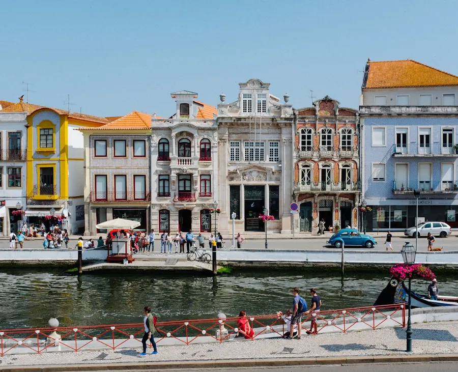
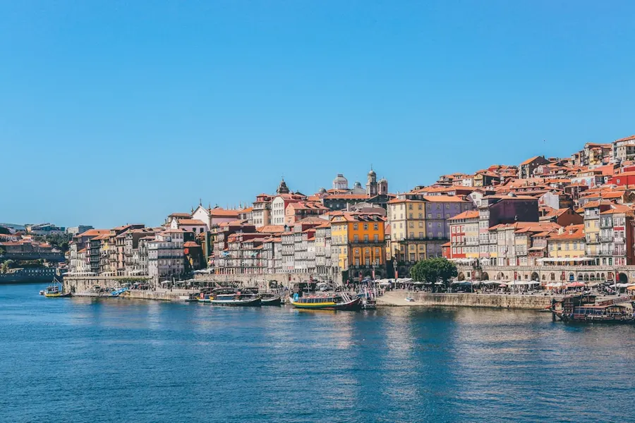
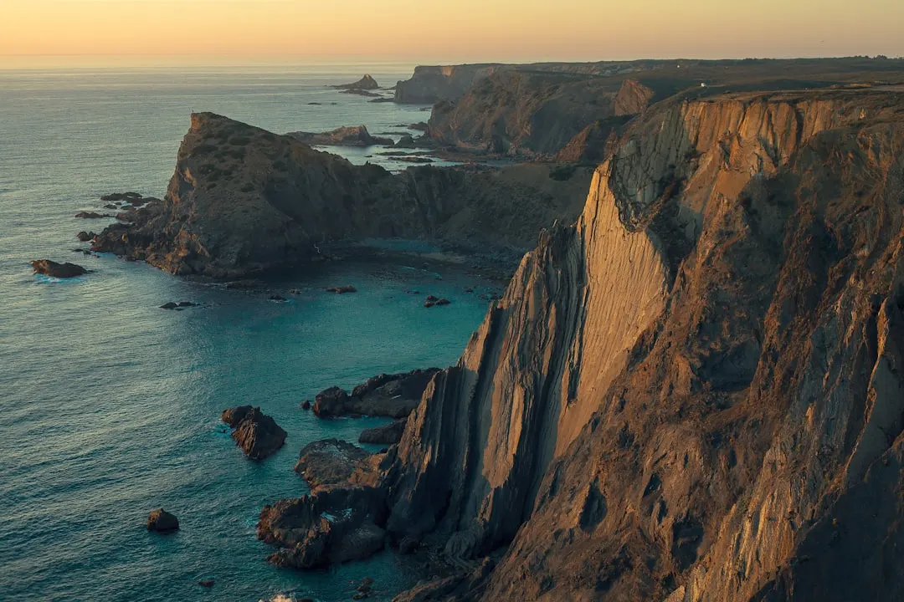

01 · Pourquoi y aller
Découvrir le Portugal
Le Portugal est un pays qui offre une grande variété d'expériences, allant de la visite de villes historiques comme Lisbonne et Porto, à l'exploration de la côte et des plages, en passant par la découverte de la campagne et de la culture rurale. Les villes portugaises sont connues pour leur architecture pittoresque, leurs rues étroites et sinueuses, et leurs places animées.
La gastronomie portugaise est également une raison de visiter le pays, avec ses plats traditionnels tels que le bacalhau à brás, les arroz de pato et les pastéis de nata. Les vins portugais, notamment les vins de Porto et les vins de l'Alentejo, sont également réputés pour leur qualité.


02 · Quand partir
La meilleure période pour visiter le Portugal
Mai est une excellente période pour visiter le Portugal, car les températures sont douces et ensoleillées, avec une moyenne de 22°C à Lisbonne et 20°C à Porto. Les précipitations sont également rares à cette période, ce qui permet de profiter pleinement des activités de plein air.
Cependant, il est important de noter que Mai est également une période de vacances scolaires en Europe, ce qui peut signifier que les attractions touristiques sont plus fréquentées que d'habitude. Il est donc recommandé de planifier à l'avance et de réserver les hébergements et les activités en conséquence.
03 · Les quartiers et zones
Explorer les villes portugaises
Lisbonne, la capitale du Portugal, est une ville qui offre une grande variété de quartiers et de zones à explorer. Le quartier de l'Alfama est connu pour ses rues étroites et sinueuses, ses places animées et ses monuments historiques tels que la cathédrale de Lisbonne et le château de São Jorge.
Le quartier de Chiado est plus moderne et offre une grande variété de boutiques, de restaurants et de cafés. La place du Rossio est également un lieu incontournable, avec ses fontaines et ses statues.

Photo : Ferhat Deniz Fors / Unsplash
04 · ì voir et à faire
Découvrir les attractions du Portugal
Le Portugal offre une grande variété d'attractions et d'activités à découvrir. La tour de Belém, située à Lisbonne, est un monument historique qui date du XVe siècle et qui offre une vue imprenable sur la ville.
Le monastère des Hiéronymites, également situé à Lisbonne, est un autre monument historique qui est connu pour son architecture manuéline et son association avec l'explorateur Vasco de Gama.
- Visiter le ch√¢teau de S√£o Jorge
- Explorer le quartier de l'Alfama
- Découvrir les plages de la côte portugaise
05 · Gastronomie
Découvrir la cuisine portugaise
La cuisine portugaise est connue pour ses plats traditionnels tels que le bacalhau à brás, les arroz de pato et les pastéis de nata. Les vins portugais, notamment les vins de Porto et les vins de l'Alentejo, sont également réputés pour leur qualité.
Il est également possible de déguster des fruits de mer frais, tels que les poissons, les crevettes et les mollusques, qui sont souvent préparés de manière simple et délicieuse.
06 · Où dormir
Trouver un hébergement au Portugal
Le Portugal offre une grande variété d'hébergements, allant des hôtels de luxe aux auberges de jeunesse et aux appartements en location. Il est possible de trouver des hébergements à des prix raisonnables, notamment en dehors des zones touristiques les plus fréquentées.
Il est recommandé de réserver à l'avance, notamment pendant les périodes de vacances scolaires ou les événements culturels, pour s'assurer de trouver un hébergement qui convienne à vos besoins et à votre budget.
07 · Budget et bons plans
√0conomiser de l'argent au Portugal
Il est possible de visiter le Portugal avec un budget limité, en choisissant des hébergements et des activités à des prix raisonnables. Il est également possible de trouver des bons plans et des promotions, notamment sur les sites web de tourisme et les réseaux sociaux.
Il est recommandé de manger dans des restaurants locaux et de boire des vins portugais, qui sont souvent moins chers que les options touristiques.
08 · Se déplacer
Les transports au Portugal
Le Portugal a un réseau de transports en commun très développé, avec des bus, des trains et des métros qui relient les principales villes et les zones touristiques.
Il est également possible de louer une voiture ou un vélo pour explorer la campagne et les zones rurales.
09 · Conseils pratiques
Préparer son voyage au Portugal
Il est recommandé de préparer son voyage au Portugal en avance, en réservant les hébergements et les activités, et en vérifiant les conditions météorologiques et les événements culturels.
Il est également important de prendre des précautions pour la sécurité, en évitant de porter des bijoux ou des objets de valeur, et en étant vigilant dans les zones touristiques fréquentées.
Le conseil Odyssa
N'oubliez pas de télécharger l'application Odyssa pour planifier votre voyage au Portugal et profiter de nos conseils et recommandations pour découvrir les meilleures attractions et expériences du pays.
Planifiez votre séjour à Portugal jour par jour et gardez tout hors ligne avec Odyssa ⬠gratuitement.
Télécharger Odyssa